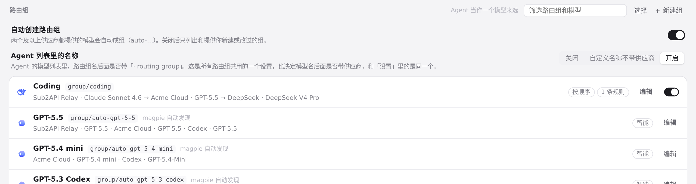
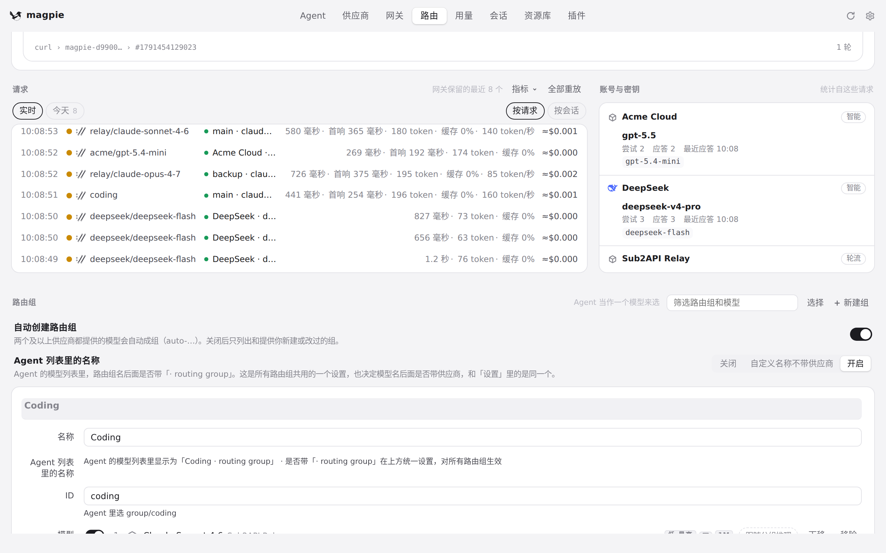
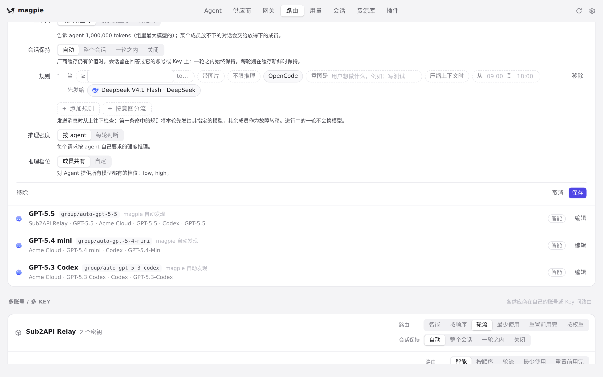
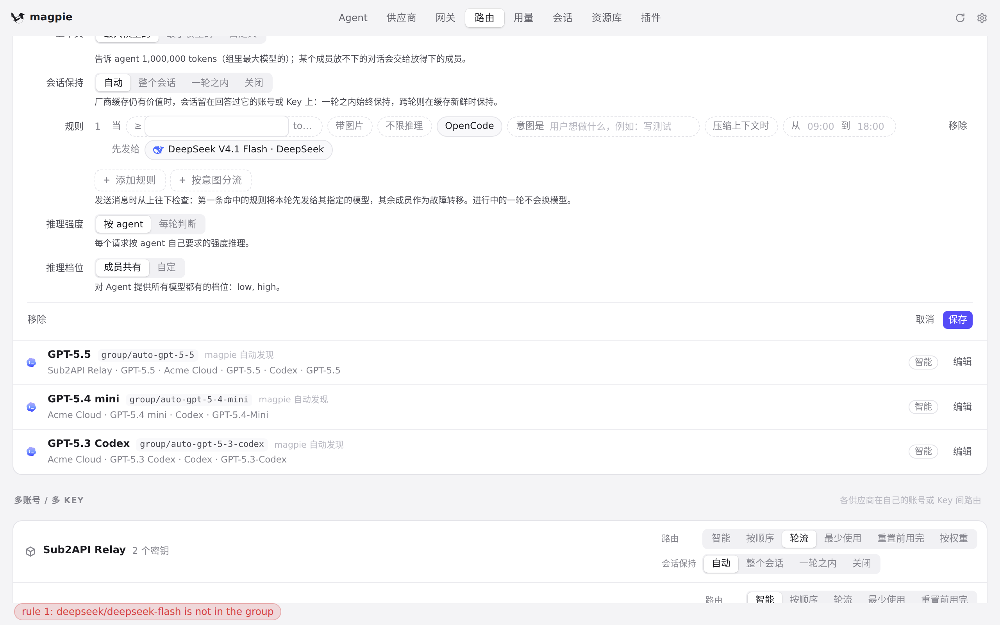

#1093 界面预览
commit 83e88d5 · 回到 PR · 路由页保存组时不再同步等一次会联网的 Codex 账号额度读取（同步改用「已经读到的值」，改由后台循环刷新），并且保存后如果被保存的那一行不在视野里，就把它滚回视野（真的出界才滚，避免让出点击保持）。
红线是鼠标走过的轨迹，红色圆环是一次点击；底部文字是这一步在做什么。空格暂停，← → 逐段查看。

保存路由组后，那一行回到视野 · 编辑前，记下「Coding」组在这页的位置

保存路由组后，那一行回到视野 · 编辑器顶替了组的那一行

保存路由组后，那一行回到视野 · 滚到「保存」时的画面

保存路由组后，那一行回到视野 · 保存后：编辑器收起，页面高度变了